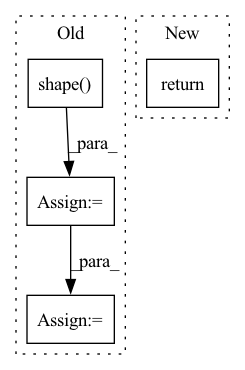

Pattern ID :25567

Before Change
**kwargs: Any,
) -> Tuple[tf.Tensor, tf.Tensor]:
seq_len = tf.shape(x)[1]
x = self.embedding(x, **kwargs) // (batch_size, target_seq_len, d_model)
x *= tf.math.sqrt(tf.cast(self.d_model, x.dtype))
x += tf.cast(self.pos_encoding[:, :seq_len, :], dtype=x.dtype)
x = self.dropout(x, **kwargs)
After Change
output = output + self.dropout(self.position_feed_forward[i](normed_output, **kwargs), **kwargs)
// (batch_size, seq_len, d_model)
return self.layer_norm(output, **kwargs)
In pattern: SUPERPATTERN
Frequency: 3
Non-data size: 4
Instances
Fragment ID: 77734947
Project Name: mindee/doctr
Commit Name: 9530f81d15395006b4844299236bdadba11c1dde
Time: 2022-07-01
Author: felixdittrich92@gmail.com
File Name: doctr/models/recognition/transformer/tensorflow.py
M Class Name: Decoder
N Class Name: Decoder
M Method Name: call(5)
N Method Name: call(5)
M Parent Class: NestedObject,layers.Layer
N Parent Class: tf.keras.layers.Layer
M File Name: doctr/models/recognition/transformer/tensorflow.py
N File Name: doctr/models/recognition/transformer/tensorflow.py
M Start Line: 251
M End Line: 265
N Start Line: 160
N End Line: 179
'>
Before Change
**kwargs: Any,
) -> Tuple[tf.Tensor, tf.Tensor]:
batch_size = tf.shape(q)[0]
q = self.wq(q, **kwargs) // (batch_size, seq_len, d_model)
k = self.wk(k, **kwargs) // (batch_size, seq_len, d_model)
v = self.wv(v, **kwargs) // (batch_size, seq_len, d_model)
q = self.split_heads(q, batch_size) // (batch_size, num_heads, seq_len_q, depth)
k = self.split_heads(k, batch_size) // (batch_size, num_heads, seq_len_k, depth)
v = self.split_heads(v, batch_size) // (batch_size, num_heads, seq_len_v, depth)
// scaled_attention.shape == (batch_size, num_heads, seq_len_q, depth)
// attention_weights.shape == (batch_size, num_heads, seq_len_q, seq_len_k)
scaled_attention = scaled_dot_product_attention(q, k, v, mask)
scaled_attention = tf.transpose(scaled_attention, perm=[0, 2, 1, 3]) // (batch, seq_len_q, num_heads, depth)
concat_attention = tf.reshape(scaled_attention,
(batch_size, -1, self.d_model)) // (batch_size, seq_len_q, d_model)
After Change
x = tf.transpose(x, perm=[0, 2, 1, 3])
x = tf.reshape(x, shape=[batch_size, -1, self.num_heads * self.d_k])
return self.output_linear(x, **kwargs)
class Decoder(layers.Layer, NestedObject):
'>
Fragment ID: 77734954
Project Name: mindee/doctr
Commit Name: 9530f81d15395006b4844299236bdadba11c1dde
Time: 2022-07-01
Author: felixdittrich92@gmail.com
File Name: doctr/models/recognition/transformer/tensorflow.py
M Class Name: MultiHeadAttention
N Class Name: MultiHeadAttention
M Method Name: call(5)
N Method Name: call(5)
M Parent Class: NestedObject,layers.Layer
N Parent Class: tf.keras.layers.Layer
M File Name: doctr/models/recognition/transformer/tensorflow.py
N File Name: doctr/models/recognition/transformer/tensorflow.py
M Start Line: 135
M End Line: 156
N Start Line: 107
N End Line: 121
'>
Before Change
matmul_qk = tf.matmul(q, k, transpose_b=True) // (..., seq_len_q, seq_len_k)
// scale matmul_qk
dk = tf.cast(tf.shape(k)[-1], q.dtype)
scaled_attention_logits = matmul_qk / tf.math.sqrt(dk)
// add the mask to the scaled tensor.
if mask is not None:
scaled_attention_logits += (tf.cast(mask, dtype=q.dtype) * -1e9)
After Change
if mask is not None:
scores = tf.where(mask == 0, -1e9, scores)
p_attn = tf.nn.softmax(scores, axis=-1)
return tf.matmul(p_attn, value), p_attn
class PositionwiseFeedForward(layers.Layer, NestedObject):
'>
Fragment ID: 77734959
Project Name: mindee/doctr
Commit Name: 9530f81d15395006b4844299236bdadba11c1dde
Time: 2022-07-01
Author: felixdittrich92@gmail.com
File Name: doctr/models/recognition/transformer/tensorflow.py
M Class Name: AnonimousClass
N Class Name: AnonimousClass
M Method Name: scaled_dot_product_attention(4)
N Method Name: scaled_dot_product_attention(4)
M Parent Class:
N Parent Class:
M File Name: doctr/models/recognition/transformer/tensorflow.py
N File Name: doctr/models/recognition/transformer/tensorflow.py
M Start Line: 88
M End Line: 99
N Start Line: 63
N End Line: 67